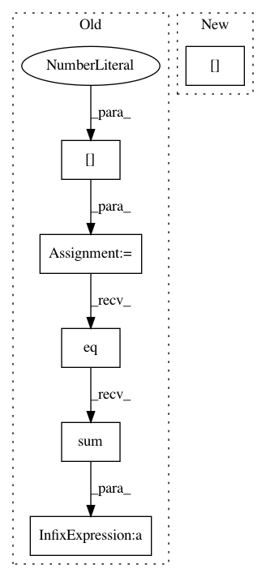

c6349f5f1a8955419d396c7ac74f782f6f00a443,examples/mnist_superpixel_75.py,,train,#Any#,60
Before Change
loss.backward()
optimizer.step()
pred = output.data.max(1)[1]
correct = pred.eq(target.data).cpu().sum()
acc = correct / 64
print("Epoch:", epoch, "Batch:", batch, "Loss:", loss.data[0],
"Accuracy:", acc)
After Change
// Unnecessary...
if epoch == 20:
for param_group in optimizer.param_groups:
param_group["lr"] = 0.00001
for batch, ((input, adjs, _), target) in enumerate(train_loader):
adj_0, adj_1, adj_2 = adjs[0][0], adjs[2][0], adjs[4][0]
In pattern: SUPERPATTERN
Frequency: 3
Non-data size: 6
Instances
Project Name: rusty1s/pytorch_geometric
Commit Name: c6349f5f1a8955419d396c7ac74f782f6f00a443
Time: 2017-11-03
Author: matthias.fey@tu-dortmund.de
File Name: examples/mnist_superpixel_75.py
Class Name:
Method Name: train
Project Name: rusty1s/pytorch_geometric
Commit Name: 776f891afa3e7bfe2ae456c064e0867c4987c762
Time: 2020-06-30
Author: matthias.fey@tu-dortmund.de
File Name: examples/rgcn.py
Class Name:
Method Name: test
Project Name: rusty1s/pytorch_geometric
Commit Name: e6484cd61d31a38f96729a70c1f461fc18b3d8ce
Time: 2017-11-08
Author: matthias.fey@tu-dortmund.de
File Name: examples/mnist_grid.py
Class Name:
Method Name: train